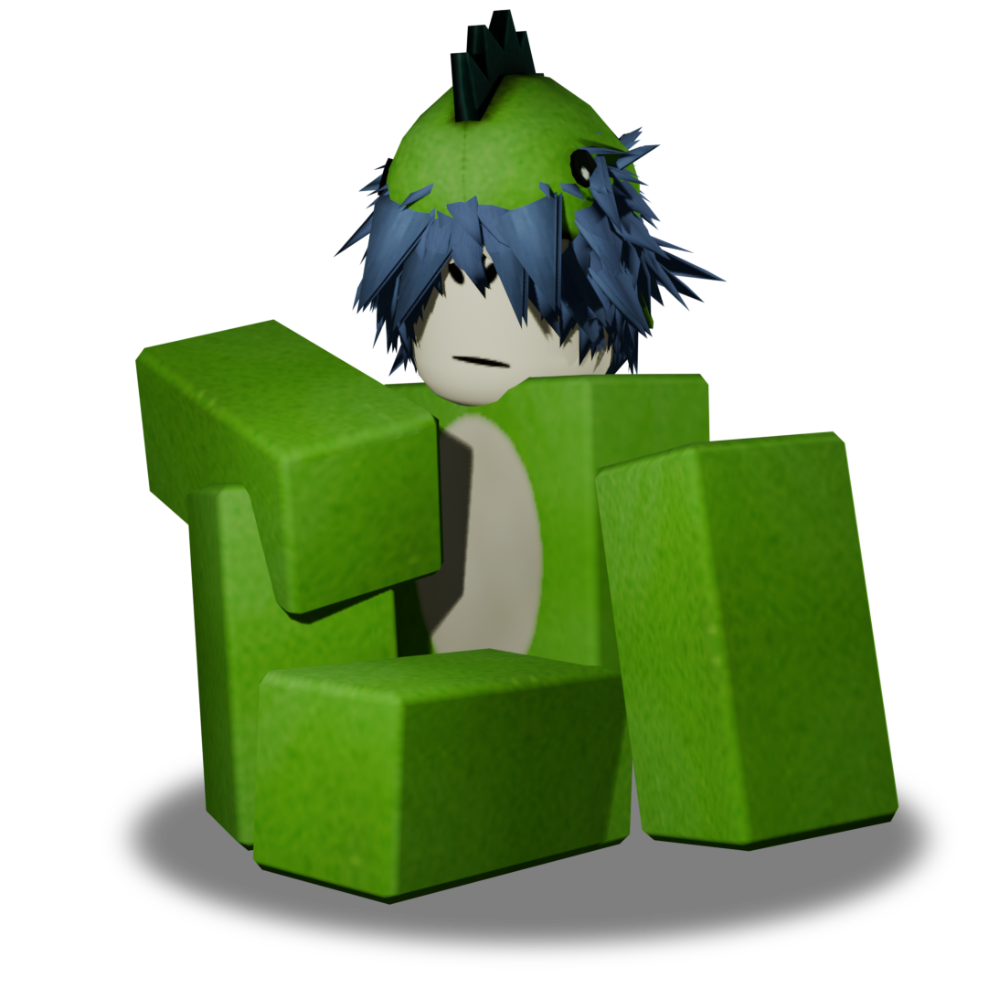

I've been trying to remake my old OLD website "xdoomz.neocities.org" in a way better way which is using github and vercel, if you STILL want to go to the old website you can do so, but it won't be as good and it will be old and cringy. WARNING! This site is still WIP, so you might find bugs and glitches everywhere, note that this site will take a long time to be built so just be patient.


cutztorx
This is my current ROBLOX avatar.
FUN FACT: This avatar has been living for around 5.4 years or longer, this avatar was first seen in an old account of mines, it's style comes from the 2017 hungry dino trend. I do not think of changing this avatar as it is quite too iconic.
If you want to visit my profile, click below!